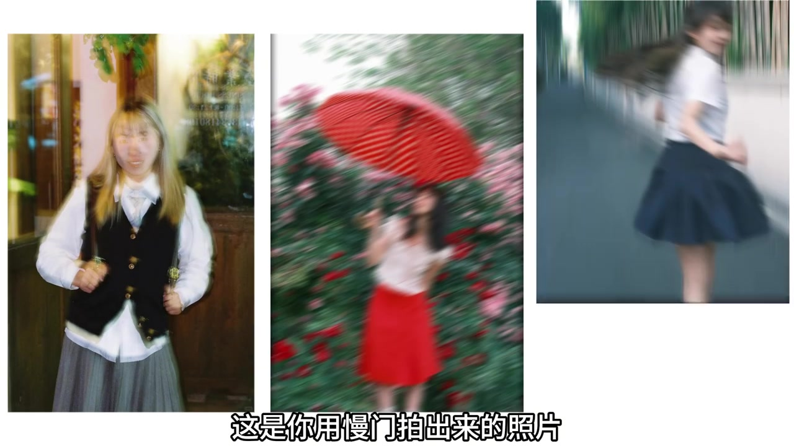
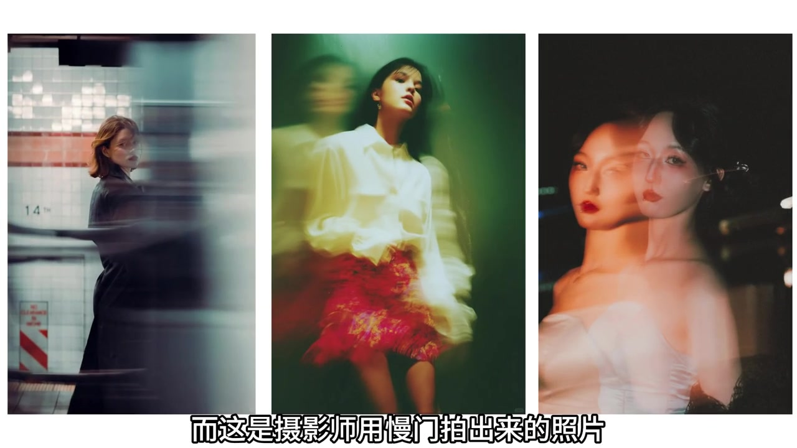
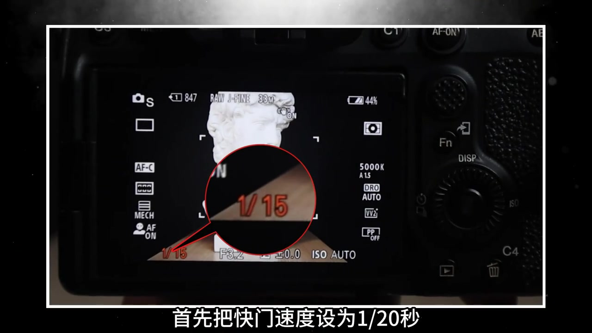
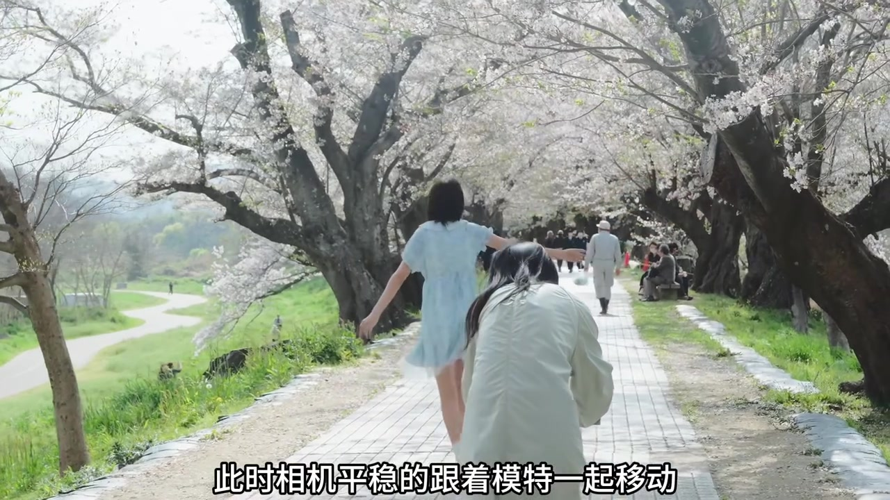
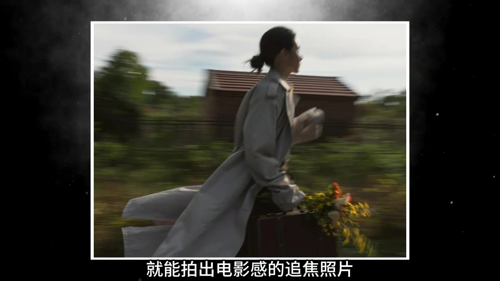
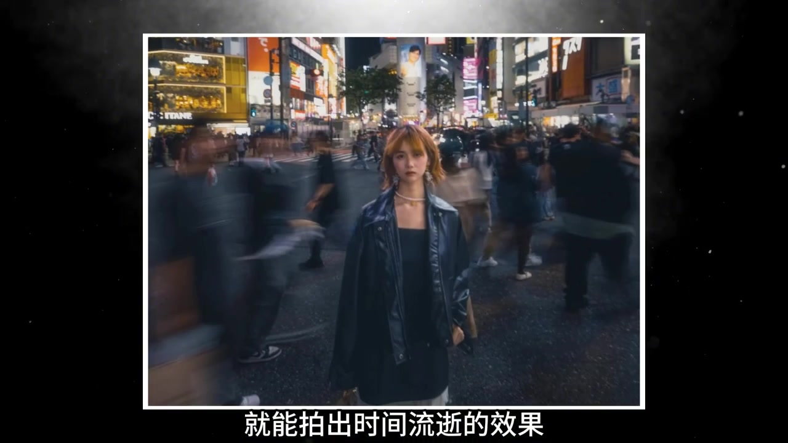
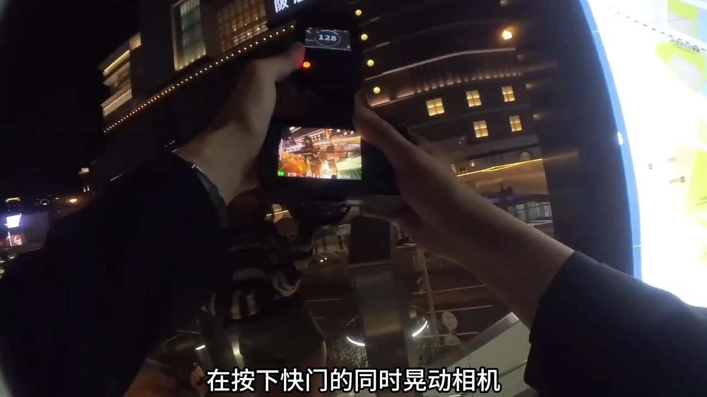
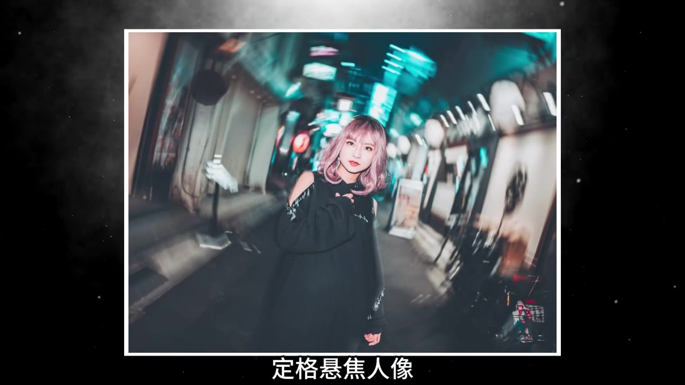

开场：同样慢门，为什么差这么大
视频一上来并排甩出三张「你用慢门拍出来的照片」：晃成重影的室内人像、径向糊掉的红伞花丛、奔跑时整个人拖成线的背影。语气像朋友吐槽——你也按了慢门，为什么结果像失手。
说明：Whisper 把「慢门」识成「漫门」，把「静止不动」识成「禁止不动」，把「旋转人像」识成「旋交人像」；下文叙事以可见字幕与画面为准，文末转录区仍完整保留全部原始分段。

紧接着切到摄影师作品：地铁站拖影大衣、绿幕感重影红裙、夜间双影红唇特写。问题抛出来：为什么差距这么大？难道是他的相机更贵吗？

镜头落到桌上一台贴着迷彩皮的索尼 α7 与橙色 G 镜头上，字幕反问「难道是他的相机更贵吗」。随后口播否定这条思路：想实现这种效果其实很简单，今天就用一分钟教会你。
可见字幕校正：「这是你用慢门拍出来的照片」「而这是摄影师用慢门拍出来的照片」「其实想要实现这种效果很简单」。
快门约 1/20，跟着模特一起平移
第一步先落在相机后屏：画面里是白色石膏胸像，底部参数被红圈标出。可见字幕说「首先把快门速度设为 1/20 秒」；当时屏幕读数约为 1/15、F3.2、ISO AUTO——口播与 dial 略有出入，但量级都在「慢门可拖影」区间。

接着是花道外拍幕后：蓝裙模特沿樱花步道向前走，摄影师侧身跟移。口播要求「相机平稳地跟着模特一起移动」——相对速度压住主体，背景横向拉成线。

结果样张是一位拎着棕色箱包、抱花束的风衣女子侧面奔跑，背景树丛与小屋被水平拖成条带，字幕写「就能拍出电影感的追焦照片」。

「首先把快门速度设为 1/20 秒」「此时相机平稳的跟着模特一起移动」「就能拍出电影感的追焦照片」。
模特站定，让人群替你「走时间」
口播切换条件：如果让模特静止不动，就能拍出时间流逝的效果。画面切到夜色十字路口——橙色短发、皮衣与珍珠项链的女生正对镜头站定，身后行人与车流化成幽灵般的虚影，左侧还能辨认 L'OCCITANE 橱窗。

和上一招对照很清楚：同样是慢门，变的是「谁在动」——模特动、相机跟，是追焦；模特静、世界动，是时间流逝。
可见字幕校正：「如果让模特静止不动」「就能拍出时间流逝的效果」。
加闪光灯，按下快门的同时晃动相机
第三招要额外准备闪光灯。第一人称画面里，双手端着相机，后屏预览已是橙黄光轨；字幕写「再按下快门的同时晃动相机」。慢门负责拖出光线轨迹，闪光负责在某一瞬间「冻」住人脸。

成片是条纹毛衣短牛仔短裤的女生立在夜间街头，橙白光带横穿画面，字幕称「绝美的流光人像效果」。
「然后准备一个闪光灯」「再按下快门的同时晃动相机」「就能拍出绝美的流光人像效果」。
中心对焦，拍摄时旋转机身
最后一招：给相机设置中心对焦，拍摄时旋转机身。幕后镜头是巷弄夜景——粉发模特站在尽头，机顶外闪亮着；口播配合「拍摄时旋转机身」。
成片里主体仍相对清晰，四周灯笼与招牌呈放射状拖影，字幕打出「定格旋焦人像」一类效果名。收尾用「你学会了吗」接互动：留下相机型号，教你更多摄影技巧。

「再给相机设置中心对焦」「拍摄时旋转机身」「这样就拍出来了定格旋焦人像」。
这一分钟里发生了什么
UP 用「不是相机更贵」破题，再给出四种慢门人像路径：跟移追焦、站定时间流逝、闪光+晃机流光、中心对焦+旋机放射。整支片像国庆出片速查表——参数、动作和成片一一对应，方便当场试拍。